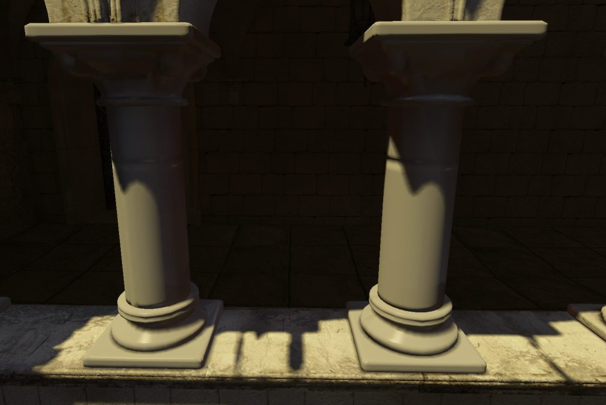
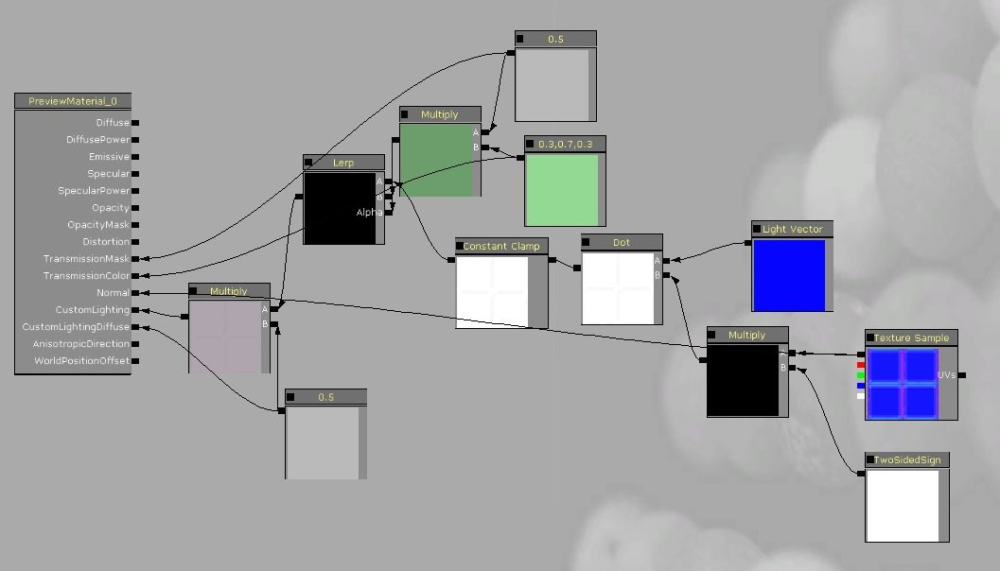

UDN
Search public documentation:
CustomLightingCH
English Translation
日本語訳
한국어
Interested in the Unreal Engine?
Visit the Unreal Technology site.
Looking for jobs and company info?
Check out the Epic games site.
Questions about support via UDN?
Contact the UDN Staff
日本語訳
한국어
Interested in the Unreal Engine?
Visit the Unreal Technology site.
Looking for jobs and company info?
Check out the Epic games site.
Questions about support via UDN?
Contact the UDN Staff
自定义光照
文档变更记录: 由 Daniel Wright 创建。
概述
版本
设置
与光照类型进行交互
输入端
- CustomLightingDiffuse - 对于区域动态光源（当前只有 SH 光源与光照环境和天空光源结合使用）和定向光照贴图漫反射，这个输入端会被计算。它必须不会依赖 LightVector 节点。
- Specular and SpecularPower - 这些输入端可以与自定义光照结合使用，但是前提条件是通过定向光照贴图计算高光光照。通过使用高光 (Specular) 和高光强度 (SpecularPower) 输入端，您可以通过自定义光照 (Custom Lighting) 获取相同的光照贴图高光，正如您使用 Phong 那样。 自发光 (Emissive)、不透明度 (Opacity) 和不透明蒙板 (Opacity Mask) 的使用和 Phong 一样。
- 没有使用漫反射 (Diffuse) 和漫反射 (DiffusePower)。
- 法线仍然影响Reflection Vector(反射向量)，但是它不用于光照，使用定向光照贴图的时候除外。
为动态光照重新构建 Phong 光照模型
 这是使用自定义光照的等同的光照模型：
这是使用自定义光照的等同的光照模型：
 下面是一个并排显示的对比图，左边柱子使用的是自定义光照，右边柱子使用的是 Phong 材质，分别被主光源和定向光照贴图照亮。注意，在这两种情况中看到的主光源发出的高光以及定向光照贴图上的高光（投影区域）情况。
下面是一个并排显示的对比图，左边柱子使用的是自定义光照，右边柱子使用的是 Phong 材质，分别被主光源和定向光照贴图照亮。注意，在这两种情况中看到的主光源发出的高光以及定向光照贴图上的高光（投影区域）情况。

传输与双面
 这是同等重要使用自定义光照的光照模型。不需要连接传输 (Transmission) 输入端，但是天空光源和 SH 光源目前无法正确处理与自定义光照相结合的传输。
这是同等重要使用自定义光照的光照模型。不需要连接传输 (Transmission) 输入端，但是天空光源和 SH 光源目前无法正确处理与自定义光照相结合的传输。
